CODING AGENTS AS PIXEL WORLD MODELS
traex/DeepSeek-V4.1-Flash · mechanics_0002
点击播放 · 原生 RGB 像素
逐轮保存的候选
回放视频、检查图与代码变化。
每份候选均可单独播放。实际图片检查记录在下方工具轨迹中。
候选 01播放与检查图
点击播放 · 原生 RGB 像素

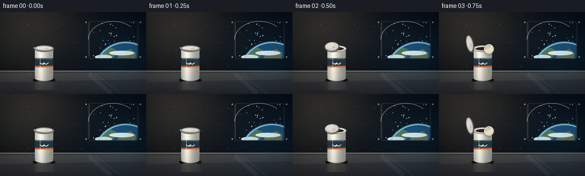
展开代码变化
--- 上一保存版本
+++ 本次保存版本
@@ -0,0 +1,621 @@
+from __future__ import annotations
+
+import math
+from pathlib import Path
+
+import numpy as np
+from PIL import Image, ImageDraw, ImageFilter
+
+import artifact_io
+
+
+CASE_DIR = Path(__file__).resolve().parent
+WIDTH = 256
+HEIGHT = 144
+FRAMES = 20
+FPS = 4.0
+SCALE = 4
+H = HEIGHT * SCALE
+W = WIDTH * SCALE
+
+
+def px(value: float) -> int:
+ return int(round(value * SCALE))
+
+
+def box(left: float, top: float, right: float, bottom: float) -> tuple[int, int, int, int]:
+ return px(left), px(top), px(right), px(bottom)
+
+
+def clamp01(value: float) -> float:
+ return max(0.0, min(1.0, value))
+
+
+def smoothstep(edge0: float, edge1: float, value: float) -> float:
+ if edge0 == edge1:
+ return float(value >= edge1)
+ t = clamp01((value - edge0) / (edge1 - edge0))
+ return t * t * (3.0 - 2.0 * t)
+
+
+def lerp(a: float, b: float, t: float) -> float:
+ return a + (b - a) * t
+
+
+def vertical_gradient(top: tuple[int, int, int], bottom: tuple[int, int, int]) -> Image.Image:
+ ys = np.linspace(0.0, 1.0, H, dtype=np.float32)[:, None, None]
+ top_arr = np.asarray(top, dtype=np.float32)[None, None, :]
+ bottom_arr = np.asarray(bottom, dtype=np.float32)[None, None, :]
+ arr = top_arr * (1.0 - ys) + bottom_arr * ys
+ arr = np.repeat(arr, W, axis=1)
+ return Image.fromarray(np.uint8(np.clip(arr, 0, 255)), "RGB")
+
+
+def add_soft_glow(
+ image: Image.Image,
+ center: tuple[float, float],
+ radius: float,
+ color: tuple[int, int, int],
+ strength: float,
+) -> Image.Image:
+ yy, xx = np.mgrid[0:H, 0:W].astype(np.float32)
+ cx, cy = center[0] * SCALE, center[1] * SCALE
+ rr = radius * SCALE
+ field = np.exp(-(((xx - cx) ** 2 + (yy - cy) ** 2) / (2.0 * rr * rr))).astype(np.float32)
+ arr = np.asarray(image, dtype=np.float32)
+ tint = np.asarray(color, dtype=np.float32)
+ arr += field[:, :, None] * tint[None, None, :] * strength
+ return Image.fromarray(np.uint8(np.clip(arr, 0, 255)), "RGB")
+
+
+def draw_polyline_glow(
+ draw: ImageDraw.ImageDraw,
+ points: list[tuple[float, float]],
+ fill: tuple[int, int, int, int],
+ width: float,
+) -> None:
+ scaled = [(px(x), px(y)) for x, y in points]
+ draw.line(scaled, fill=fill, width=px(width), joint="curve")
+
+
+def make_background() -> Image.Image:
+ image = vertical_gradient((24, 30, 41), (46, 48, 54))
+ draw = ImageDraw.Draw(image, "RGBA")
+
+ # Ceiling and a warm service light.
+ draw.rectangle(box(0, 0, 256, 13), fill=(31, 35, 43, 255))
+ draw.rectangle(box(0, 11, 256, 14), fill=(75, 78, 82, 255))
+ draw.rounded_rectangle(box(12, 3, 132, 9), radius=px(2.5), fill=(93, 89, 78, 255))
+ draw.rounded_rectangle(box(17, 4, 127, 7), radius=px(1.3), fill=(246, 232, 199, 255))
+ draw.line([(px(18), px(8)), (px(126), px(8))], fill=(255, 242, 210, 95), width=px(1.2))
+
+ # Back wall panel seams and a narrow central rib.
+ for x, color, width in [
+ (43, (13, 18, 25, 210), 2.0),
+ (46, (93, 97, 102, 130), 0.7),
+ (111, (19, 24, 31, 185), 1.1),
+ (114, (87, 91, 96, 75), 0.6),
+ (145, (13, 18, 25, 195), 1.5),
+ (148, (92, 96, 101, 75), 0.6),
+ ]:
+ draw.line([(px(x), px(14)), (px(x), px(105))], fill=color, width=px(width))
+ draw.line([(px(0), px(100)), (px(256), px(100))], fill=(21, 25, 31, 180), width=px(1.5))
+ draw.line([(px(0), px(102)), (px(256), px(102))], fill=(137, 132, 120, 95), width=px(0.8))
+
+ # Left control bank.
+ draw.rounded_rectangle(box(4, 25, 37, 103), radius=px(2.3), fill=(34, 39, 47, 255))
+ draw.rounded_rectangle(box(6, 27, 35, 101), radius=px(1.6), fill=(20, 25, 32, 255))
+ draw.rounded_rectangle(box(8, 30, 33, 47), radius=px(1.3), fill=(29, 35, 43, 255))
+ draw.rounded_rectangle(box(8, 50, 33, 67), radius=px(1.3), fill=(28, 34, 41, 255))
+ for row in range(2):
+ for col in range(3):
+ x0 = 10.0 + col * 7.2
+ y0 = 32.0 + row * 20.0
+ color = [(74, 158, 160), (216, 154, 75), (120, 132, 139)][col]
+ draw.rounded_rectangle(
+ box(x0, y0, x0 + 4.4, y0 + 5.0),
+ radius=px(1.0),
+ fill=(*color, 235),
+ )
+ draw.rounded_rectangle(box(9, 73, 32, 91), radius=px(1.2), fill=(24, 30, 37, 255))
+ draw.line([(px(11), px(80)), (px(29), px(80))], fill=(107, 131, 136, 150), width=px(1.0))
+ draw.line([(px(11), px(84)), (px(25), px(84))], fill=(85, 102, 107, 130), width=px(0.7))
+ draw.ellipse(box(11, 94, 17, 100), fill=(205, 90, 61, 240))
+ draw.ellipse(box(20, 94, 26, 100), fill=(78, 139, 146, 230))
+ draw.ellipse(box(28, 95, 31, 98), fill=(220, 203, 166, 220))
+
+ # Cabinet behind the canister.
+ draw.rounded_rectangle(box(58, 23, 109, 99), radius=px(2.2), fill=(39, 43, 50, 255))
+ draw.rounded_rectangle(box(61, 26, 106, 96), radius=px(1.6), fill=(33, 38, 46, 255))
+ draw.line([(px(63), px(27)), (px(104), px(27))], fill=(110, 108, 101, 70), width=px(0.8))
+ draw.line([(px(84), px(27)), (px(84), px(96))], fill=(18, 22, 28, 130), width=px(0.8))
+ draw.rounded_rectangle(box(79, 58, 81, 70), radius=px(0.8), fill=(135, 132, 123, 180))
+ draw.rounded_rectangle(box(88, 58, 90, 70), radius=px(0.8), fill=(135, 132, 123, 180))
+
+ # Window frame and clipped orbital view.
+ draw.rounded_rectangle(box(149, 11, 247, 87), radius=px(8), fill=(80, 87, 94, 255))
+ draw.rounded_rectangle(box(151, 13, 245, 85), radius=px(6.5), fill=(153, 153, 145, 255))
+ draw.rounded_rectangle(box(154, 16, 242, 82), radius=px(4.5), fill=(5, 10, 18, 255))
+
+ space = Image.new("RGBA", (W, H), (5, 10, 18, 255))
+ sdraw = ImageDraw.Draw(space, "RGBA")
+ rng = np.random.default_rng(9321)
+ for _ in range(46):
+ x = rng.uniform(156, 240)
+ y = rng.uniform(17, 80)
+ r = rng.uniform(0.25, 0.85)
+ alpha = int(rng.uniform(80, 220))
+ sdraw.ellipse(box(x - r, y - r, x + r, y + r), fill=(190, 213, 225, alpha))
+
+ # Earth fills the lower part of the window with a cool atmospheric rim.
+ earth_center = (220.0, 109.0)
+ earth_radius = 56.0
+ sdraw.ellipse(
+ box(
+ earth_center[0] - earth_radius - 1.5,
+ earth_center[1] - earth_radius - 1.5,
+ earth_center[0] + earth_radius + 1.5,
+ earth_center[1] + earth_radius + 1.5,
+ ),
+ fill=(53, 104, 139, 255),
+ )
+ sdraw.ellipse(
+ box(
+ earth_center[0] - earth_radius,
+ earth_center[1] - earth_radius,
+ earth_center[0] + earth_radius,
+ earth_center[1] + earth_radius,
+ ),
+ fill=(24, 65, 100, 255),
+ )
+ sdraw.polygon(
+ [
+ (px(173), px(86)),
+ (px(181), px(69)),
+ (px(194), px(62)),
+ (px(204), px(67)),
+ (px(199), px(79)),
+ (px(187), px(91)),
+ ],
+ fill=(79, 101, 77, 255),
+ )
+ sdraw.polygon(
+ [
+ (px(198), px(92)),
+ (px(211), px(71)),
+ (px(228), px(65)),
+ (px(238), px(72)),
+ (px(235), px(89)),
+ ],
+ fill=(92, 101, 73, 255),
+ )
+ for cx, cy, rx, ry, color in [
+ (181, 79, 15, 4, (193, 207, 207, 118)),
+ (213, 72, 22, 4, (212, 222, 220, 95)),
+ (235, 84, 12, 3, (196, 211, 212, 85)),
+ (193, 92, 24, 3, (188, 204, 204, 70)),
+ ]:
+ sdraw.ellipse(box(cx - rx, cy - ry, cx + rx, cy + ry), fill=color)
+ sdraw.arc(
+ box(
+ earth_center[0] - earth_radius,
+ earth_center[1] - earth_radius,
+ earth_center[0] + earth_radius,
+ earth_center[1] + earth_radius,
+ ),
+ start=184,
+ end=350,
+ fill=(126, 196, 219, 230),
+ width=px(1.7),
+ )
+
+ window_mask = Image.new("L", (W, H), 0)
+ wmdraw = ImageDraw.Draw(window_mask)
+ wmdraw.rounded_rectangle(box(154, 16, 242, 82), radius=px(4.5), fill=255)
+ space = Image.composite(space, Image.new("RGBA", (W, H), (5, 10, 18, 255)), window_mask)
+ image.paste(space.convert("RGB"), (0, 0))
+
+ # Window bevels.
+ draw.rounded_rectangle(box(154, 16, 242, 82), radius=px(4.5), outline=(29, 34, 41, 230), width=px(1.2))
+ draw.arc(box(154, 16, 242, 82), start=181, end=315, fill=(216, 210, 190, 150), width=px(1.0))
+ draw.line([(px(156), px(18)), (px(156), px(78))], fill=(222, 216, 199, 80), width=px(0.7))
+ draw.line([(px(240), px(22)), (px(240), px(78))], fill=(23, 28, 34, 160), width=px(0.7))
+
+ # Small metal catches around the window.
+ for x, y in [(150.5, 18), (245.5, 18), (150.5, 79), (245.5, 79)]:
+ draw.ellipse(box(x - 1.3, y - 1.3, x + 1.3, y + 1.3), fill=(192, 187, 172, 220))
+ draw.ellipse(box(x - 0.45, y - 0.45, x + 0.45, y + 0.45), fill=(50, 55, 60, 230))
+
+ # Counter.
+ counter = vertical_gradient((87, 88, 87), (34, 37, 43)).crop((0, px(103), W, H))
+ image.paste(counter, (0, px(103)))
+ draw = ImageDraw.Draw(image, "RGBA")
+ draw.rectangle(box(0, 103, 256, 105), fill=(124, 123, 116, 220))
+ draw.line([(px(0), px(105)), (px(256), px(105))], fill=(18, 22, 28, 150), width=px(1.2))
+ draw.polygon(
+ [
+ (px(0), px(108)),
+ (px(256), px(106)),
+ (px(256), px(118)),
+ (px(0), px(123)),
+ ],
+ fill=(255, 246, 223, 13),
+ )
+ draw.line([(px(155), px(108)), (px(194), px(143))], fill=(194, 207, 209, 17), width=px(8))
+ draw.line([(px(166), px(108)), (px(211), px(143))], fill=(220, 229, 225, 11), width=px(3))
+
+ # A few restrained wall rivets and panel scuffs.
+ for x, y in [(49, 22), (49, 96), (108, 22), (108, 96), (143, 25), (143, 96)]:
+ draw.ellipse(box(x - 0.8, y - 0.8, x + 0.8, y + 0.8), fill=(130, 130, 123, 95))
+ for x0, y0, x1, y1 in [(118, 53, 137, 53), (120, 55, 132, 55), (52, 36, 55, 44)]:
+ draw.line([(px(x0), px(y0)), (px(x1), px(y1))], fill=(150, 148, 136, 20), width=px(0.6))
+
+ image = add_soft_glow(image, (45, 8), 70, (88, 76, 54), 0.55)
+ image = add_soft_glow(image, (221, 73), 54, (29, 74, 96), 0.22)
+ return image
+
+
+BACKGROUND = make_background()
+
+
+def mask_from_draw(draw_fn) -> Image.Image:
+ mask = Image.new("L", (W, H), 0)
+ draw_fn(ImageDraw.Draw(mask))
+ return mask
+
+
+def gradient_body(mask: Image.Image) -> Image.Image:
+ yy, xx = np.mgrid[0:H, 0:W].astype(np.float32)
+ nx = (xx / SCALE - 61.0) / 32.0
+ highlight = np.exp(-((nx - 0.32) / 0.22) ** 2)
+ edge_shade = np.clip((nx - 0.58) / 0.42, 0.0, 1.0)
+ top_light = np.clip(1.0 - (yy / SCALE - 62.0) / 70.0, 0.0, 1.0)
+ value = 178.0 + 62.0 * highlight + 14.0 * top_light - 36.0 * edge_shade
+ warm = 7.0 * highlight
+ arr = np.zeros((H, W, 3), dtype=np.float32)
+ arr[:, :, 0] = value + warm
+ arr[:, :, 1] = value + warm * 0.45
+ arr[:, :, 2] = value - 9.0 - warm * 0.3
+ arr = np.uint8(np.clip(arr, 0, 255))
+ layer = Image.fromarray(arr, "RGB").convert("RGBA")
+ layer.putalpha(mask)
+ return layer
+
+
+def draw_rotated_ellipse(
+ layer: Image.Image,
+ center: tuple[float, float],
+ size: tuple[float, float],
+ angle_deg: float,
+ fill: tuple[int, int, int, int],
+ outline: tuple[int, int, int, int] | None = None,
+ outline_width: float = 0.0,
+) -> None:
+ rw, rh = max(2, px(size[0])), max(2, px(size[1]))
+ pad = max(3, px(outline_width + 2))
+ temp = Image.new("RGBA", (rw + pad * 2, rh + pad * 2), (0, 0, 0, 0))
+ tdraw = ImageDraw.Draw(temp)
+ tdraw.ellipse(
+ (pad, pad, pad + rw - 1, pad + rh - 1),
+ fill=fill,
+ outline=outline,
+ width=max(1, px(outline_width)) if outline else 0,
+ )
+ rotated = temp.rotate(angle_deg, resample=Image.Resampling.BICUBIC, expand=True)
+ x = px(center[0]) - rotated.width // 2
+ y = px(center[1]) - rotated.height // 2
+ layer.alpha_composite(rotated, (x, y))
+
+
+def draw_canister(layer: Image.Image, open_frac: float) -> None:
+ draw = ImageDraw.Draw(layer, "RGBA")
+
+ # Contact shadow and warm rim light on the counter.
+ draw.ellipse(box(57, 115, 97, 124), fill=(14, 18, 23, 88))
+ draw.ellipse(box(63, 116, 91, 121), fill=(6, 9, 12, 78))
+
+ body_mask = mask_from_draw(
+ lambda d: (
+ d.rounded_rectangle(box(61, 63, 93, 117), radius=px(5.6), fill=255),
+ d.ellipse(box(61, 111, 93, 121), fill=255),
+ )
+ )
+ body = gradient_body(body_mask)
+ layer.alpha_composite(body)
+
+ # Label band and cream emblem.
+ label_mask = mask_from_draw(
+ lambda d: (
+ d.rectangle(box(58, 81, 96, 97), fill=255),
+ )
+ )
+ label_mask = Image.composite(label_mask, Image.new("L", (W, H), 0), body_mask)
+ label_layer = Image.new("RGBA", (W, H), (30, 48, 62, 0))
+ label_layer.putalpha(label_mask.point(lambda v: int(v * 0.96)))
+ layer.alpha_composite(label_layer)
+ draw = ImageDraw.Draw(layer, "RGBA")
+ draw.rectangle(box(61, 94.5, 93, 97), fill=(196, 108, 63, 230))
+ draw.line([(px(63), px(82.0)), (px(91), px(82.0))], fill=(144, 172, 179, 75), width=px(0.65))
+
+ # A tiny stylized cream wave.
+ draw.arc(box(69.5, 84.5, 78.5, 92.0), start=8, end=172, fill=(241, 231, 204, 235), width=px(1.4))
+ draw.arc(box(76.0, 84.5, 85.0, 92.0), start=8, end=172, fill=(241, 231, 204, 235), width=px(1.4))
+ draw.ellipse(box(73.5, 90.1, 77.0, 92.2), fill=(241, 231, 204, 235))
+
+ # Brushed-metal vertical glints.
+ glint = Image.new("RGBA", (W, H), (0, 0, 0, 0))
+ gdraw = ImageDraw.Draw(glint, "RGBA")
+ gdraw.rounded_rectangle(box(69.5, 70, 71.0, 108), radius=px(0.8), fill=(255, 252, 238, 82))
+ gdraw.line([(px(87), px(72)), (px(88), px(108))], fill=(76, 82, 86, 65), width=px(0.8))
+ glint.putalpha(Image.composite(glint.getchannel("A"), Image.new("L", (W, H), 0), body_mask))
+ layer.alpha_composite(glint)
+
+ # Rim and the dark open mouth.
+ draw = ImageDraw.Draw(layer, "RGBA")
+ draw.ellipse(box(59.8, 58.6, 94.2, 70.2), fill=(154, 155, 150, 255))
+ draw.ellipse(box(60.7, 59.4, 93.3, 68.8), fill=(222, 218, 205, 255))
+ draw.ellipse(box(64.0, 61.1, 90.0, 67.3), fill=(71, 59, 53, 255))
+ draw.ellipse(box(65.2, 62.0, 88.8, 66.2), fill=(39, 32, 31, 255))
+ draw.arc(box(64.2, 60.3, 89.8, 67.6), start=188, end=350, fill=(246, 239, 218, 205), width=px(1.2))
+
+ # Hinge.
+ draw.ellipse(box(58.0, 61.3, 62.0, 65.2), fill=(74, 78, 79, 255))
+ draw.ellipse(box(59.0, 62.0, 61.3, 64.3), fill=(188, 185, 174, 255))
+
+ # Lid swings from the closed position to an upright position at the hinge.
+ frac = clamp01(open_frac)
+ eased = frac * frac * (3.0 - 2.0 * frac)
+ center = (lerp(77.0, 51.8, eased), lerp(63.4, 54.6, eased))
+ size = (lerp(32.0, 10.5, eased), lerp(9.2, 31.0, eased))
+ angle = lerp(0.0, 12.0, eased)
+ draw_rotated_ellipse(
+ layer,
+ (center[0] + 1.0, center[1] + 1.5),
+ (size[0] + 1.5, size[1] + 1.5),
+ angle,
+ (91, 93, 91, 175),
+ )
+ draw_rotated_ellipse(
+ layer,
+ center,
+ size,
+ angle,
+ (219, 216, 205, 255),
+ (114, 116, 113, 255),
+ 0.9,
+ )
+ draw_rotated_ellipse(
+ layer,
+ (center[0] - size[0] * 0.11, center[1] - size[1] * 0.09),
+ (size[0] * 0.55, size[1] * 0.56),
+ angle,
+ (247, 244, 230, 150),
+ )
+ draw_rotated_ellipse(
+ layer,
+ (center[0] + size[0] * 0.12, center[1] + size[1] * 0.08),
+ (size[0] * 0.22, size[1] * 0.20),
+ angle,
+ (152, 150, 143, 85),
+ )
+
+
+def ribbon_point(s: float, time_value: float) -> tuple[float, float]:
+ x = 86.5 + 96.0 * s + 2.5 * math.sin(1.25 * math.pi * s + 0.20 * time_value)
+ y = (
+ 64.0
+ - 20.0 * s
+ - 7.5 * math.sin(math.pi * s)
+ + 2.3 * math.sin(1.7 * math.pi * s + 0.55 * time_value)
+ )
+ return x, y
+
+
+def ribbon_radius(s: float, time_value: float) -> float:
+ return (7.9 - 4.2 * s) * (0.90 + 0.10 * math.sin(6.2 * math.pi * s + 0.7 * time_value))
+
+
+def polygon_ellipse(
+ center: tuple[float, float],
+ radii: tuple[float, float],
+ angle_rad: float,
+ count: int = 30,
+) -> list[tuple[int, int]]:
+ points = []
+ ca, sa = math.cos(angle_rad), math.sin(angle_rad)
+ for i in range(count):
+ theta = 2.0 * math.pi * i / count
+ x = radii[0] * math.cos(theta)
+ y = radii[1] * math.sin(theta)
+ points.append((px(center[0] + x * ca - y * sa), px(center[1] + x * sa + y * ca)))
+ return points
+
+
+LARGE_DROPS = [
+ (1.55, 0.53, 4.2, 1.0, 4.8, 1.35, -12.0),
+ (1.95, 0.64, 6.5, 2.6, 4.2, 1.22, 22.0),
+ (2.25, 0.72, 7.0, -4.1, 5.5, 1.42, -25.0),
+ (2.55, 0.80, 9.0, 1.1, 6.4, 1.28, 9.0),
+ (2.82, 0.87, 11.0, 4.5, 4.7, 1.50, 25.0),
+ (3.02, 0.91, 11.5, -5.8, 3.8, 1.42, -30.0),
+ (1.35, 0.47, 3.0, 6.2, 3.4, 1.25, 52.0),
+]
+
+
+def make_small_drops() -> list[tuple[float, float, float, float, float, float]]:
+ rng = np.random.default_rng(741)
+ result = []
+ for _ in range(28):
+ birth = rng.uniform(2.35, 4.35)
+ s = rng.uniform(0.66, 0.98)
+ vx = rng.uniform(3.5, 10.5)
+ vy = rng.uniform(-6.0, 6.0)
+ radius = rng.uniform(0.55, 1.75)
+ angle = math.degrees(math.atan2(vy, vx)) + rng.uniform(-18, 18)
+ result.append((birth, s, vx, vy, radius, angle))
+ return result
+
+
+SMALL_DROPS = make_small_drops()
+
+
+def draw_cream(frame: Image.Image, time_value: float) -> None:
+ cream_start = 0.55
+ age = time_value - cream_start
+ if age <= 0.0:
+ return
+
+ growth = smoothstep(0.0, 3.35, age)
+ if growth <= 0.0:
+ return
+
+ shadow = Image.new("RGBA", (W, H), (0, 0, 0, 0))
+ body = Image.new("RGBA", (W, H), (0, 0, 0, 0))
+ light = Image.new("RGBA", (W, H), (0, 0, 0, 0))
+ sdraw = ImageDraw.Draw(shadow, "RGBA")
+ bdraw = ImageDraw.Draw(body, "RGBA")
+ ldraw = ImageDraw.Draw(light, "RGBA")
+
+ # The main soft ribbon grows smoothly out of the canister mouth.
+ samples = 48
+ points: list[tuple[float, float, float]] = []
+ for i in range(samples + 1):
+ s = growth * i / samples
+ x, y = ribbon_point(s, time_value)
+ r = ribbon_radius(s, time_value)
+ if i > samples * 0.92:
+ r *= 1.0 + 0.35 * math.sin((i / samples) * math.pi)
+ points.append((x, y, r))
+
+ for x, y, r in points:
+ sdraw.ellipse(box(x - r - 1.0, y - r + 0.3, x + r + 1.3, y + r + 2.2), fill=(167, 158, 143, 122))
+ for x, y, r in points:
+ bdraw.ellipse(box(x - r, y - r, x + r, y + r), fill=(232, 223, 202, 252))
+ for x, y, r in points:
+ bdraw.ellipse(
+ box(x - r * 0.62 - 0.8, y - r * 0.67 - 1.1, x + r * 0.54 - 0.8, y + r * 0.46 - 1.1),
+ fill=(247, 241, 222, 155),
+ )
+ if r > 3.2:
+ ldraw.ellipse(
+ box(x - r * 0.20 - 1.0, y - r * 0.42 - 1.2, x + r * 0.10 - 1.0, y - r * 0.06 - 1.2),
+ fill=(255, 251, 237, 185),
+ )
+
+ # A small cream collar at the opening makes the source unambiguous.
+ collar_r = 3.8 + 2.0 * smoothstep(0.0, 0.55, age)
+ cx, cy = ribbon_point(0.0, time_value)
+ sdraw.ellipse(box(cx - collar_r, cy - collar_r * 0.65, cx + collar_r, cy + collar_r * 0.65), fill=(160, 150, 137, 105))
+ bdraw.ellipse(box(cx - collar_r, cy - collar_r * 0.72, cx + collar_r, cy + collar_r * 0.72), fill=(239, 230, 210, 248))
+ ldraw.arc(
+ box(cx - collar_r * 0.82, cy - collar_r * 0.64, cx + collar_r * 0.55, cy + collar_r * 0.15),
+ start=188,
+ end=338,
+ fill=(255, 250, 235, 210),
+ width=px(1.1),
+ )
+
+ def draw_drop(
+ center: tuple[float, float],
+ radius: float,
+ angle_deg: float,
+ stretch: float,
+ brightness: float = 1.0,
+ ) -> None:
+ angle = math.radians(angle_deg)
+ rx = radius * stretch
+ ry = radius / max(1.0, stretch * 0.88)
+ shadow_center = (center[0] + 1.1, center[1] + 1.4)
+ sdraw.polygon(polygon_ellipse(shadow_center, (rx + 0.7, ry + 0.7), angle), fill=(158, 149, 136, 112))
+ bdraw.polygon(polygon_ellipse(center, (rx, ry), angle), fill=(234, 225, 205, 252))
+ highlight_center = (center[0] - radius * 0.20, center[1] - radius * 0.26)
+ bdraw.polygon(
+ polygon_ellipse(highlight_center, (rx * 0.62, ry * 0.58), angle),
+ fill=(int(245 * brightness), int(239 * brightness), int(220 * brightness), 170),
+ )
+ if radius > 2.0:
+ glint_center = (center[0] - radius * 0.31, center[1] - radius * 0.42)
+ ldraw.polygon(
+ polygon_ellipse(glint_center, (rx * 0.16, ry * 0.18), angle),
+ fill=(255, 252, 241, 215),
+ )
+
+ # Larger cream islands detach from the moving ribbon and spread laterally.
+ for birth, s, vx, vy, target_r, stretch, angle in LARGE_DROPS:
+ if time_value < birth:
+ continue
+ drop_age = time_value - birth
+ start_x, start_y = ribbon_point(s, birth)
+ x = start_x + vx * drop_age + 0.7 * math.sin(1.8 * drop_age + s * 8.0)
+ y = start_y + vy * drop_age + 0.5 * math.sin(1.4 * drop_age + s * 11.0)
+ radius = target_r * smoothstep(0.0, 0.62, drop_age)
+ wobble = 1.0 + 0.06 * math.sin(2.2 * drop_age + s * 9.0)
+ draw_drop((x, y), radius, angle + 2.0 * math.sin(drop_age), stretch * wobble)
+
+ # Fine droplets extend the slow dispersal and give the plume a soft edge.
+ for birth, s, vx, vy, target_r, angle in SMALL_DROPS:
+ if time_value < birth:
+ continue
+ drop_age = time_value - birth
+ start_x, start_y = ribbon_point(s, birth)
+ x = start_x + vx * drop_age
+ y = start_y + vy * drop_age + 0.35 * math.sin(drop_age * 2.0 + s * 14.0)
+ radius = target_r * smoothstep(0.0, 0.30, drop_age)
+ draw_drop((x, y), radius, angle, 1.20 + 0.15 * math.sin(drop_age + s))
+
+ shadow = shadow.filter(ImageFilter.GaussianBlur(px(1.25)))
+ light = light.filter(ImageFilter.GaussianBlur(px(0.55)))
+ frame.alpha_composite(shadow)
+ frame.alpha_composite(body)
+ frame.alpha_composite(light)
+
+
+def add_atmosphere(image: Image.Image, frame_index: int) -> Image.Image:
+ arr = np.asarray(image, dtype=np.float32).copy()
+ yy, xx = np.mgrid[0:HEIGHT, 0:WIDTH].astype(np.float32)
+ nx = (xx - WIDTH * 0.5) / (WIDTH * 0.5)
+ ny = (yy - HEIGHT * 0.5) / (HEIGHT * 0.5)
+ vignette = np.clip(1.0 - 0.16 * (nx * nx + ny * ny), 0.78, 1.0)
+ arr *= vignette[:, :, None]
+
+ # Sparse dust motes keep the air feeling occupied without reading as noise.
+ rng = np.random.default_rng(5200 + frame_index)
+ for _ in range(5):
+ x = int(rng.integers(4, WIDTH - 4))
+ y = int(rng.integers(15, HEIGHT - 16))
+ alpha = int(rng.integers(10, 25))
+ arr[max(0, y - 1) : y + 2, max(0, x - 1) : x + 2] += np.array([alpha, alpha, alpha], dtype=np.float32) * 0.35
+
+ noise = np.random.default_rng(8000 + frame_index).normal(0.0, 1.45, (HEIGHT, WIDTH, 1))
+ arr += noise
+ arr = np.uint8(np.clip(arr, 0, 255))
+ return Image.fromarray(arr, "RGB")
+
+
+def render_frame(frame_index: int) -> np.ndarray:
+ time_value = frame_index / FPS
+ frame = BACKGROUND.convert("RGBA")
+
+ open_frac = [0.0, 0.0, 0.38, 0.82, 1.0][frame_index] if frame_index < 5 else 1.0
+ draw_canister(frame, open_frac)
+ draw_cream(frame, time_value)
+
+ # A restrained reflection ties the canister to the counter.
+ reflection = frame.crop((px(55), px(104), px(100), px(122))).transpose(Image.Transpose.FLIP_TOP_BOTTOM)
+ reflection = reflection.filter(ImageFilter.GaussianBlur(px(1.0)))
+ reflection.putalpha(Image.new("L", reflection.size, 34))
+ frame.alpha_composite(reflection, (px(55), px(119)))
+
+ small = frame.convert("RGB").resize((WIDTH, HEIGHT), Image.Resampling.LANCZOS)
+ small = add_atmosphere(small, frame_index)
+ return np.asarray(small, dtype=np.uint8)
+
+
+def main() -> None:
+ frames = np.stack([render_frame(i) for i in range(FRAMES)])
+ artifact_io.save(frames, CASE_DIR)
+ print(f"Wrote {FRAMES} frames to {CASE_DIR}")
+
+
+if __name__ == "__main__":
+ main()
候选 02播放与检查图
点击播放 · 原生 RGB 像素

展开代码变化
--- 上一保存版本
+++ 本次保存版本
@@ -445,12 +445,12 @@
def make_small_drops() -> list[tuple[float, float, float, float, float, float]]:
rng = np.random.default_rng(741)
result = []
- for _ in range(28):
- birth = rng.uniform(2.35, 4.35)
- s = rng.uniform(0.66, 0.98)
- vx = rng.uniform(3.5, 10.5)
- vy = rng.uniform(-6.0, 6.0)
- radius = rng.uniform(0.55, 1.75)
+ for _ in range(42):
+ birth = rng.uniform(2.20, 4.45)
+ s = rng.uniform(0.52, 0.98)
+ vx = rng.uniform(3.2, 11.5)
+ vy = rng.uniform(-7.0, 7.0)
+ radius = rng.uniform(0.55, 1.65)
angle = math.degrees(math.atan2(vy, vx)) + rng.uniform(-18, 18)
result.append((birth, s, vx, vy, radius, angle))
return result
@@ -491,6 +491,29 @@
sdraw.ellipse(box(x - r - 1.0, y - r + 0.3, x + r + 1.3, y + r + 2.2), fill=(167, 158, 143, 122))
for x, y, r in points:
bdraw.ellipse(box(x - r, y - r, x + r, y + r), fill=(232, 223, 202, 252))
+
+ # Offset lobes interrupt the stream's outline so it reads as aerated cream
+ # rather than a uniformly extruded tube.
+ for index, s in enumerate(np.arange(0.07, growth, 0.078)):
+ x, y = ribbon_point(float(s), time_value)
+ base_r = ribbon_radius(float(s), time_value)
+ phase = 2.35 * s + 0.31 * time_value
+ offset = math.sin(phase * 3.1 + index * 0.7) * base_r * 0.54
+ tangent_x, tangent_y = ribbon_point(min(1.0, float(s) + 0.006), time_value)
+ prev_x, prev_y = ribbon_point(max(0.0, float(s) - 0.006), time_value)
+ length = max(0.001, math.hypot(tangent_x - prev_x, tangent_y - prev_y))
+ normal_x = -(tangent_y - prev_y) / length
+ normal_y = (tangent_x - prev_x) / length
+ lobe_r = base_r * (0.30 + 0.12 * (0.5 + 0.5 * math.sin(index * 2.2)))
+ lx = x + normal_x * offset
+ ly = y + normal_y * offset
+ bdraw.ellipse(box(lx - lobe_r, ly - lobe_r, lx + lobe_r, ly + lobe_r), fill=(239, 230, 209, 224))
+ if index % 3 == 0:
+ ldraw.ellipse(
+ box(lx - lobe_r * 0.34, ly - lobe_r * 0.42, lx + lobe_r * 0.22, ly - lobe_r * 0.02),
+ fill=(255, 251, 236, 155),
+ )
+
for x, y, r in points:
bdraw.ellipse(
box(x - r * 0.62 - 0.8, y - r * 0.67 - 1.1, x + r * 0.54 - 0.8, y + r * 0.46 - 1.1),
@@ -578,15 +601,15 @@
vignette = np.clip(1.0 - 0.16 * (nx * nx + ny * ny), 0.78, 1.0)
arr *= vignette[:, :, None]
- # Sparse dust motes keep the air feeling occupied without reading as noise.
- rng = np.random.default_rng(5200 + frame_index)
+ # Static dust and sensor grain preserve the station between moving frames.
+ rng = np.random.default_rng(5200)
for _ in range(5):
x = int(rng.integers(4, WIDTH - 4))
y = int(rng.integers(15, HEIGHT - 16))
alpha = int(rng.integers(10, 25))
arr[max(0, y - 1) : y + 2, max(0, x - 1) : x + 2] += np.array([alpha, alpha, alpha], dtype=np.float32) * 0.35
- noise = np.random.default_rng(8000 + frame_index).normal(0.0, 1.45, (HEIGHT, WIDTH, 1))
+ noise = np.random.default_rng(8000).normal(0.0, 1.45, (HEIGHT, WIDTH, 1))
arr += noise
arr = np.uint8(np.clip(arr, 0, 255))
return Image.fromarray(arr, "RGB")
候选 03播放与检查图

可观测工具轨迹
实际执行的命令与返回图片。
命令 1exit 0
/bin/bash -c 'cat prompt.txt'
命令 2exit 0
/bin/bash -c 'cat GENERATION_RULES.md'
命令 3exit 0
/bin/bash -c 'cat task_spec.json'
命令 4exit 0
/bin/bash -c "find . -maxdepth 2 -type f -printf '%p\\n' | sort | head -200"
命令 5exit 0
/bin/bash -c "sed -n '1,240p' artifact_io.py"
命令 6exit 0
/bin/bash -c "sed -n '1,240p' player_template.html"
命令 7exit 0
/bin/bash -c "python - <<'PY'
import PIL, numpy
print('PIL', PIL.__version__)
print('numpy', numpy.__version__)
PY"命令 8exit 0
/bin/bash -c 'python generate.py'
命令 9exit 0
/bin/bash -c "python - <<'PY'
from PIL import Image
for i in [0,2,4,8,12,19]:
im=Image.open(f'frames/{i:02d}.png')
im.resize((1024,576), Image.Resampling.NEAREST).save(f'.tmp/frame_{i:02d}_4x.png')
PY"命令 10exit 0
/bin/bash -c "python - <<'PY'
from PIL import Image
for i in [1,2,3,5,6,10,16]:
im=Image.open(f'frames/{i:02d}.png')
im.resize((1024,576), Image.Resampling.NEAREST).save(f'.tmp/frame_{i:02d}_4x.png')
PY"命令 11exit 0
/bin/bash -c "python - <<'PY'
from PIL import Image
import numpy as np
frames=[np.asarray(Image.open(f'frames/{i:02d}.png'),dtype=np.int16) for i in range(20)]
for i in range(1,20):
d=np.abs(frames[i]-frames[i-1])
print(f'{i-1:02d}->{i:02d}: mean={d.mean():.2f} changed={(d.max(2)>4).mean()*100:.1f}%')
PY"命令 12exit 0
/bin/bash -c "nl -ba generate.py | sed -n '300,540p'"
命令 13exit 0
/bin/bash -c "nl -ba generate.py | sed -n '540,640p'"
命令 14exit 0
/bin/bash -c 'python generate.py'
命令 15exit 0
/bin/bash -c "python - <<'PY'
from PIL import Image
for i in [8,12,19]:
im=Image.open(f'frames/{i:02d}.png')
im.resize((1024,576), Image.Resampling.NEAREST).save(f'.tmp/revised_{i:02d}_4x.png')
PY"命令 16exit 0
/bin/bash -c "python - <<'PY'
from pathlib import Path
from PIL import Image
import numpy as np, hashlib, json
frames=[]
for p in sorted(Path('frames').glob('*.png')):
with Image.open(p) as im:
assert im.size == (256,144) and im.mode == 'RGB', (p, im.size, im.mode)
frames.append(np.asarray(im))
assert len(frames)==20
arr=np.stack(frames)
print('frames', arr.shape, arr.dtype, 'range', int(arr.min()), int(arr.max()))
print('mean_luma', float(arr.mean()))
print('consecutive_unique_pixels', [int(np.any(arr[i]"'!=arr[i-1],axis=2).sum()) for i in range(1,20)])
print('"'static_initial_diff', float(np.abs(arr[1].astype(int)-arr[0].astype(int)).mean()))
with np.load('pixels.npz') as z:
print('npz', z['pixels'].shape, z['pixels'].dtype)
print('index_bytes', Path('index.html').stat().st_size)
print('generate_sha256', hashlib.sha256(Path('generate.py').read_bytes()).hexdigest())
PY"视觉工具实际返回图片 1
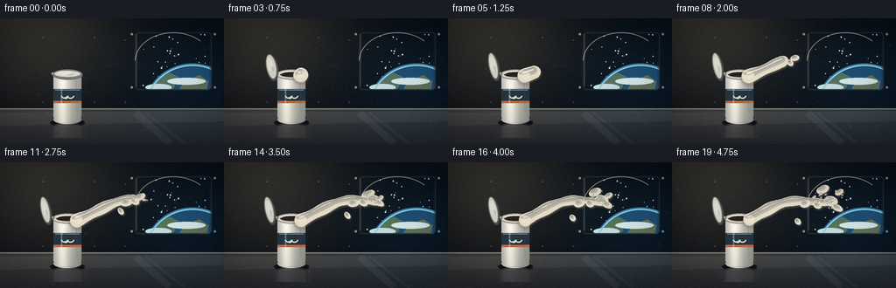
视觉工具实际返回图片 2
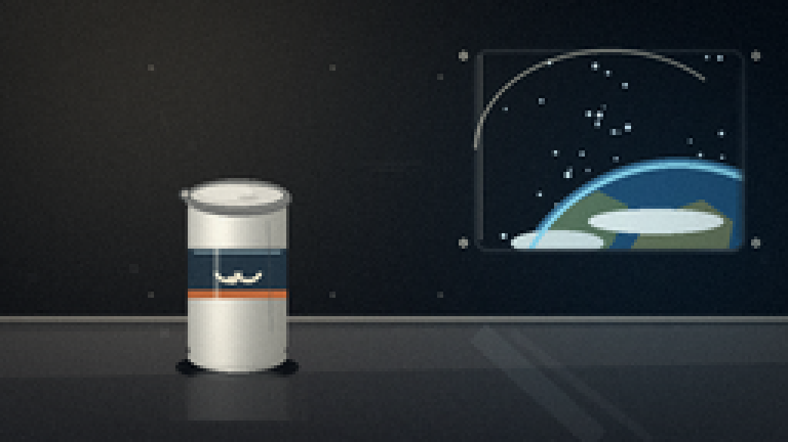
视觉工具实际返回图片 3
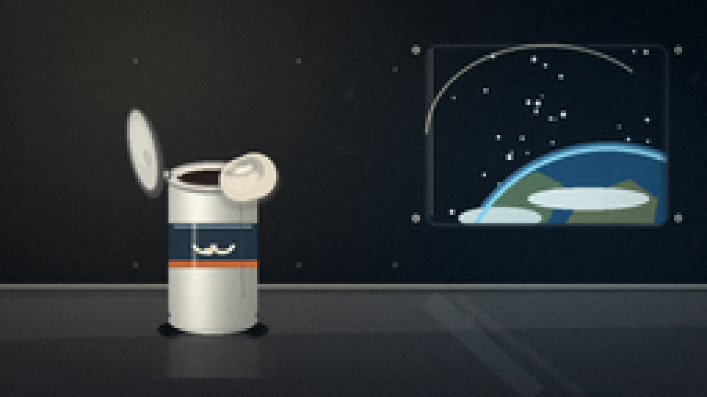
视觉工具实际返回图片 4
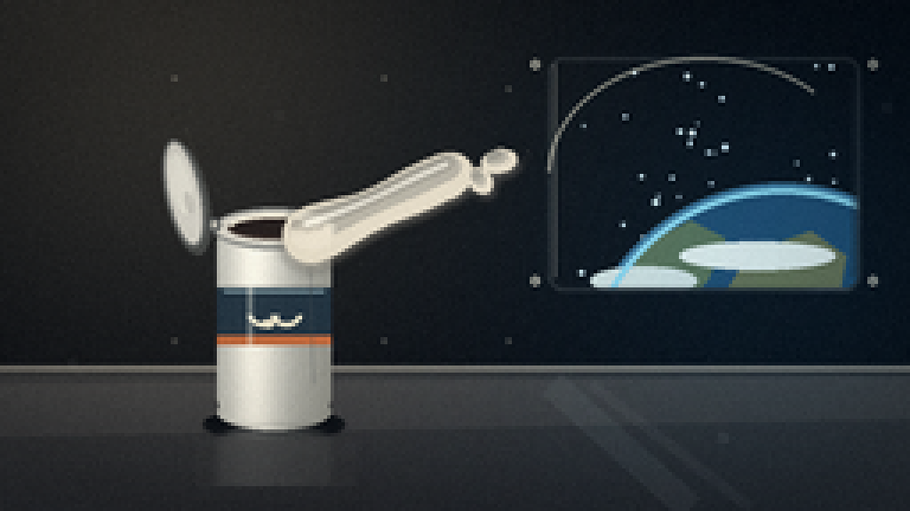
视觉工具实际返回图片 5
视觉工具实际返回图片 6
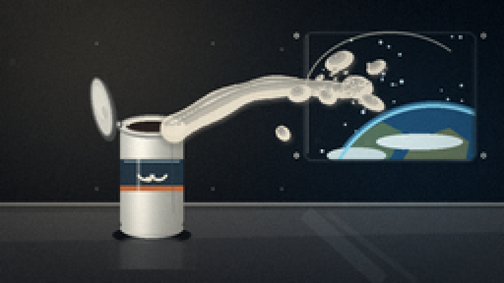
视觉工具实际返回图片 7
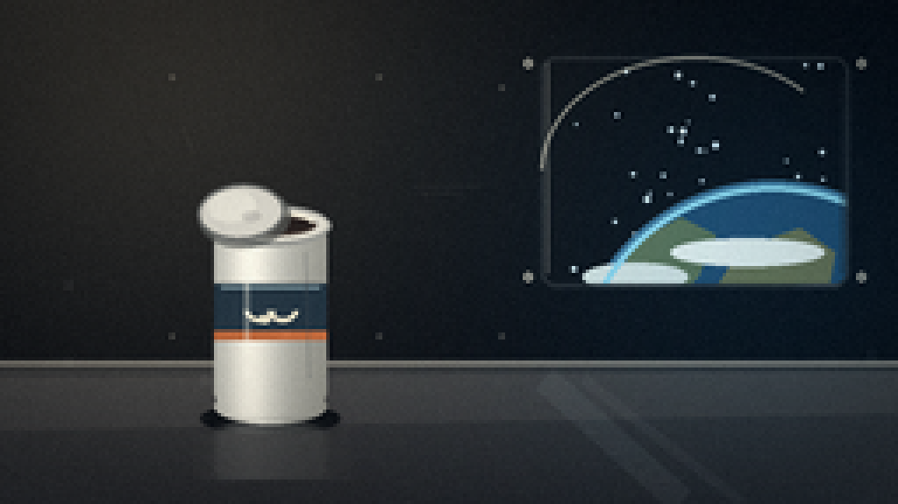
视觉工具实际返回图片 8
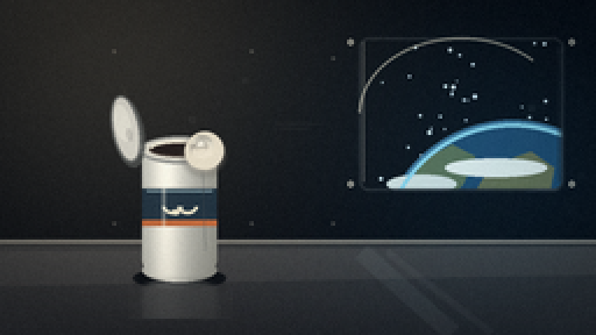
视觉工具实际返回图片 9
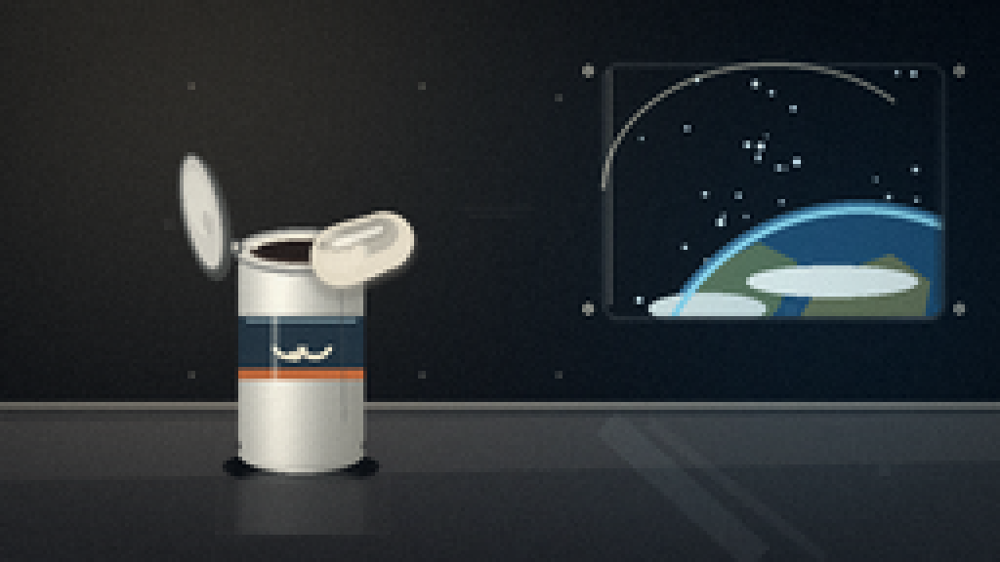
视觉工具实际返回图片 10
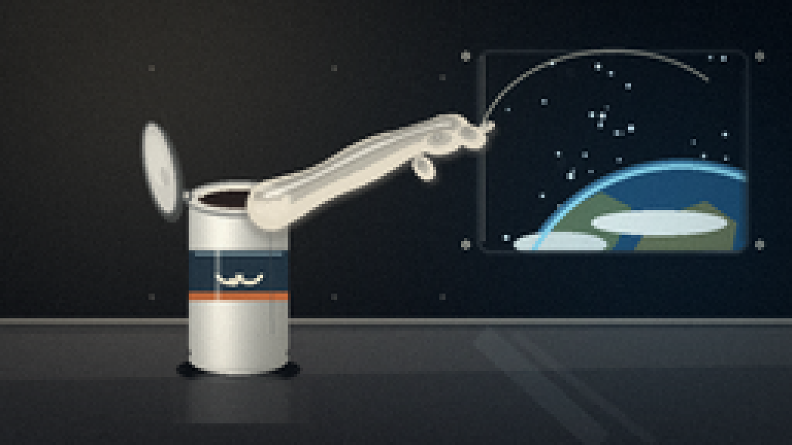
视觉工具实际返回图片 11
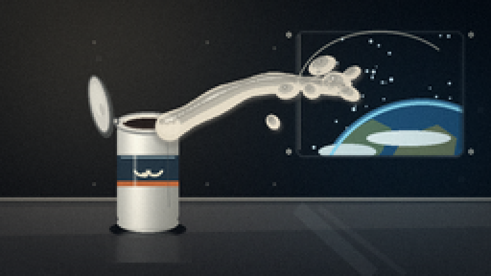
视觉工具实际返回图片 12
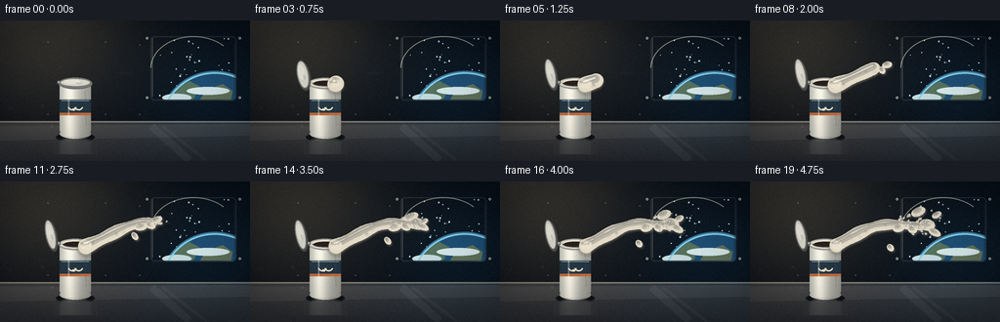
视觉工具实际返回图片 13
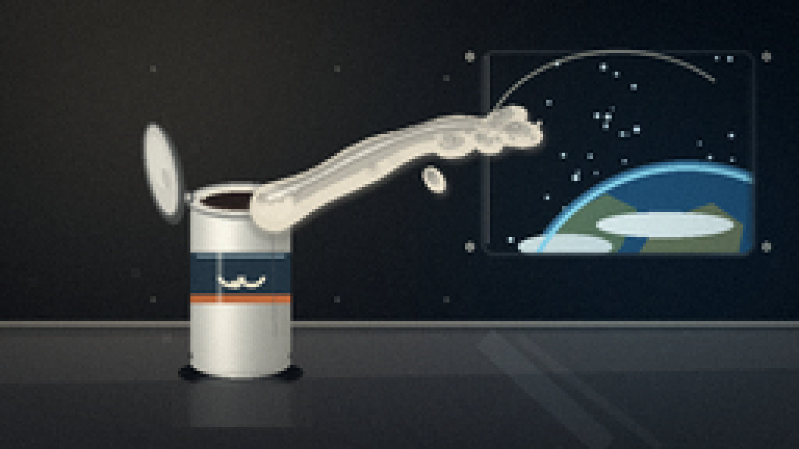
视觉工具实际返回图片 14
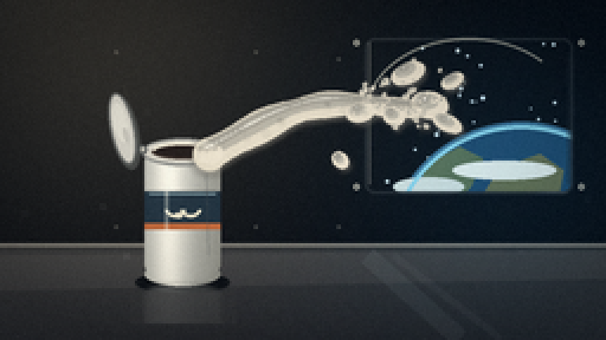
保存候选 3 份；完成命令 16 次；可验证图片返回 14 张。原始 API 响应与完整日志保留在本地。